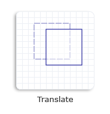

To translate a 2-D object is to move the object along the x-axis, the y-axis, or both. You can call either one of the following two methods to create a translation transformation.
The following code creates a translation transformation matrix that moves the square 20 units to the right along the x-axis and 10 units downward along the y-axis.
// Create a rectangle.
D2D1_RECT_F rectangle = D2D1::Rect(126.0f, 80.5f, 186.0f, 140.5f);
// Draw the outline of the rectangle.
m_pRenderTarget->DrawRectangle(
rectangle,
m_pOriginalShapeBrush,
1.0f,
m_pStrokeStyleDash
);
// Apply the translation transform to the render target.
m_pRenderTarget->SetTransform(D2D1::Matrix3x2F::Translation(20, 10));
// Paint the interior of the rectangle.
m_pRenderTarget->FillRectangle(rectangle, m_pFillBrush);
// Draw the outline of the rectangle.
m_pRenderTarget->DrawRectangle(rectangle, m_pTransformedShapeBrush);
The following illustration shows the effect of applying the translation transformation to the square, where the original square is a dotted outline and the translated square is a solid outline.

Â
Â